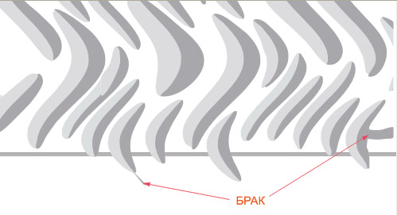
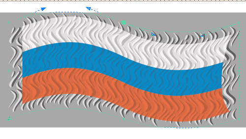

РЯБЬ НА ФЛАГЕ
Рябь, или мелкие волны, на флаге, развевающемся на ветру, или волнообразные складки на ткани в данном уроке предлагается создать по такой схеме: 1. создаём один элемент – прообраз складки; 2 дублируем элемент с небольшими трансформациями, получая группу будущих складок; 3. растрируем изображение; 4. применяем волнообразное искажение «Рябь»; 5. векторизация (трассировка); 6. применяем эффект Контурная группа с целью получения мягкого края; 7. накладываем поверх полученных складок полотнище флага с частичной прозрачностью.
Итак, сначала создадим один элемент будущей волны, который скорее походит на горный хребет при виде сверху, у которого один склон освещён, а другой в тени.
Создадайте эллипс, задайте цвет заливки пока чёрный.
Создадайте дубль с цветом заливки 10% чёрного.
Переведите обе фигуры в кривые.
У верхнего эллипса сдвиньте одну боковую точку примерно к середине эллипса, а векторы точек, лежащих на перпендикулярном диаметре, укоротите, чтобы получилась примерно половинка эллипса.

Сгруппируйте обе фигуры. Полученную группу копируйте и трансформируйте, создавая некоторое количество копий: какие-то подлиннее или короче, какие-то пошире или поуже (не делайте очень узкие, они потом будут смотреться некрасиво). Распределите все эти будущие волны на некотором пространстве, необязательно на всей нужной площади, так как дальнейшие правки будут трудоёмки, лучше после дальнейших преобразований потом еще размножить полученные элементы.
Выделите все фигуры и Выбирете на главной панели Растровые изображения/ Преобразовать в растровое… В открывшемся окне установите разрешение 300 dpi.
После растеризации изображения выбирете: Растровые изображения/ Искажения/ Рябь. Поэксперементируйте с параметрами искажения, но не увлекайтесь большими амплитудами.
После того, как получите какой-либо рисунок искажений, надо будет снова преобразовать изображение в векторное. Выбирете: Растровые изображения/ Трассировка абрисом/ Изображение высокого качества.
В открывшемся окне дождитесь, когда процесс завершится (шкала справа, внизу). На вкладке Настройка установите: Удалить исходное изображение и Удалить фон. Перейдите на вкладку Цвета и установите количество цветов 3.
После векторизации изображения его желательно подправить. Инструментом форма выделите рамкой всё и, щёлкнув по одной из точек правой кнопкой мыши, выбирете Сглаживать.
Затем явно неудачные фигуры лучше просто удалить и заменить их другими, похожей конфигурации, при необходимости конфигурацию подправить. Желательно просмотреть полученные фигуры более внимательно и, если где-то есть перекручивания (восьмёрки), то устранить.

Затем необходимо выделить отдельно тёмные элементы и объединить их в один объект, и отдельно светлые и также объединить в один объект. Если объектов очень много, есть риск, что при выполнении в дальнейшем команды создания контурной группы компьютер может долго обрабатывать задание, а то и вовсе зависнуть. Для более надёжного преодоления следующего этапа можно объединять элементы частями и также частями обрабатывать. Здесь более определённо что-либо посоветовать трудно, поскольку у всех пользователей компьютеры различной производительности.
Итак, следующий этап – имитация мягкого края посредством создания контурной группы с плавным переходом цветовых тонов от цвета фона к белому для светлых элементов и примерно к 60% чёрного – для тёмных.
Создайте фон с заливкой 10% чёрного.
Создайте контурную группу для светлых элементов, задав цвет заливки исходных элементов также 10% чёрного. Цвет конечной заливки – белый. Шаг установите 0,3 – 0,5 мм (повторю для тех, кто не знаком с другими моими уроками, что для плавных цветовых переходов особо высокое разрешение не требуется). Если площадь белого окажется мала, то уменьшайте количество шагов. Надо понимать, что для элементов разной величины одинаково не получится, примите какое-то компромиссное решение, иначе придётся с каждым элементом заниматься отдельно.
Создайте контурную группу для тёмных элементов, также задав цвет заливки исходных элементов 10% чёрного, а цвет конечной заливки 60 % чёрного.
Затем, если флаг будет иметь волнообразную форму, можно наложить его на пространство с волнами ряби, всё вместе сгруппировать и с помощью эффекта Оболочка придать нужную форму, затем разгруппировать. Флагу придайте однородную прозрачность с уровнем около 30.

Можно сделать складки более частыми, сгруппировав их, продублировав всю группу и сдвинув немного дублированную группу. Выступающие части из под флага обрежьте, создав предварительно обрезную маску.
Специально для CDRPRO.RU
Копирование урока или части его и опубликование любым способом запрещено.